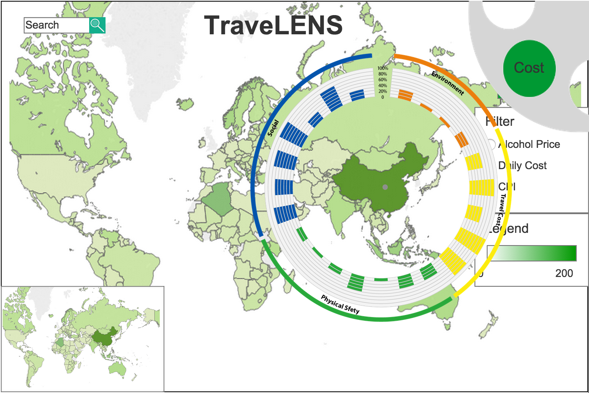
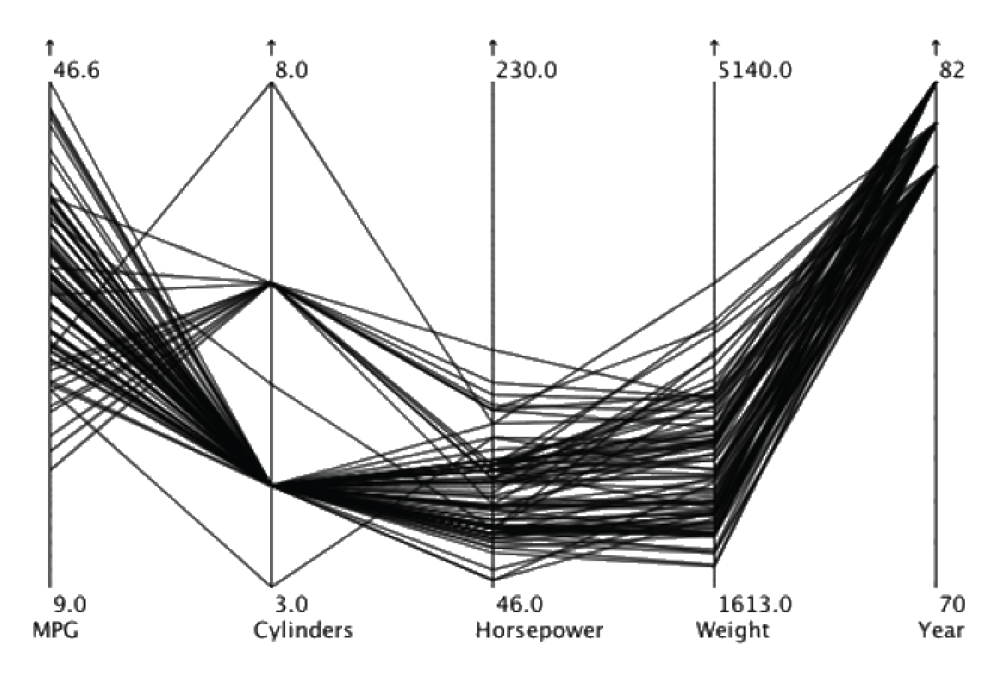
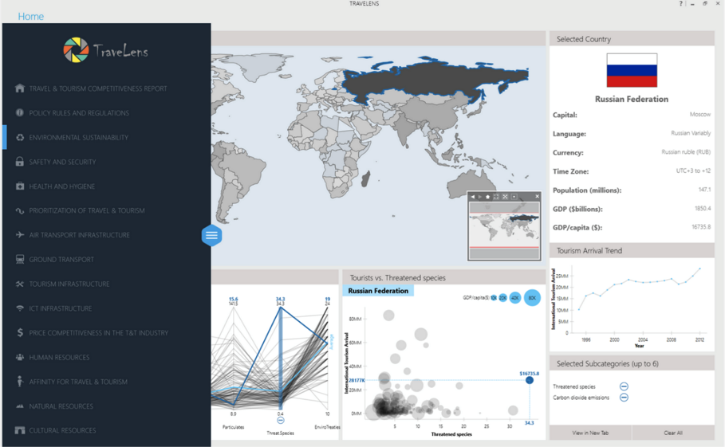
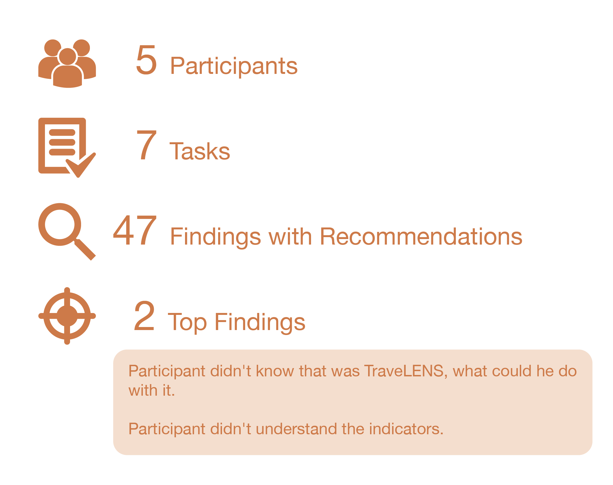

Team Role
UX/UI Designer
Duration
09/2014 - 12/2014
10 weeks
Methods
Persona
Card sorting
Tools
Axure
Visual C++
TraveLENS is an interactive visualization tool that equips potential travellers with data and information across a wide range of risk factors that could influence in their decision-making process. It is designed to let the users see and explore the world through different categories of lenses depending on their tasks and goals, and the visualization is designed to adapt and morph to fit the requirements of each category and to present that category’s information in the most effective and expressive way.
Video Demo
Design Process
-
Circular Bar Chart
We initially began investigating data sets in health, traveler safety, weather and climate, and visa/documentation categories.

Parallel Coordinates
We revised our prototype by removing some mocked-up interactions for drag-and-drop country comparison and replacing the circular bar chart with parallel coordinates in a separate dashboard.

Integrated Main Tab
In the third version of design, we moved the parallel coordinates from the second tab to the main tab, in order to offer more insights using brushing and linking.

Usability Testing and Key Findings
- We found that users needed help recognizing subordination in the data (distinguishing topic categories and their scores from the subcategory measures).
- We needed to clarify units of measure on all parallel coordinate axes, and provide detailed descriptions of subcategory measures.
- Users didn’t always recognize that the the heatmap reflected aggregate scores for the categories.
- Users had various reactions to our implementation of multiple selection; the most important issues were difficulty distinguishing between lines and making individual selections (in parallel coordinates) and value labeling for multiples.
- Users responded to the “profile recognition” aspect of using parallel coordinates, but had the typical difficulty examining relationships between axes that weren’t adjacent.
- Users looked for an interactive legend for data display and selection, and expected to be able to interact with the choropleth legend as well.
- Users were interested in a quick tutorial function.

Next Project

SmartPonics
UX/UI Designer
Platform: iOS
A self-control rooftop hydroponics garden with mobile control that helps people grow plants easily.